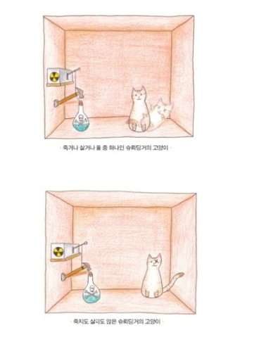

실험 내용
When I hear of Schrödinger's cat, I reach for my gun.
삶과 죽음이란 상반된 개념이 겨우 확률론으로 중첩될 수 있다는 게 무슨 소리인가?
고양이 한 마리와 청산가리가 든 유리병, 방사성물질 라듐, 방사능을 검출하는 가이거 계수기, 망치가 상자에 들어 있다.
방사선이 감지되면 망치가 내리쳐져 청산가리 병이 깨지는 구조고 결국 그 병이 깨지면 고양이는 중독되어 죽고 만다.
가이거 계수기 위에는 1시간에 50%의 확률로 핵붕괴해 알파선을 방사하는 우라늄 입자가 놓여있다.
이럴 경우 1시간이 지났을 때 고양이는 어떤 상태로 존재하는가?
실험자는 외부에 있기 때문에 관찰이나 간섭을 절대 할 수 없는 상태에서 대답을 해야 한다.
간단히 요약하면 "1시간 이후 고양이는 각각 절반의 확률로 생사가 결정된다.
1시간 이후 상자를 열기까지 당신은 결과를 알아 볼 수단이 전혀 없으며 결국 1시간 이후 상자를 개봉할 때 고양이는 과연 어떻게 되어있느냐?"라는 것.
슈뢰딩거는 또한 슈뢰딩거가 이 실험을 주장하게 만든 코펜하겐 해석에 따르면 상자를 열기 전까진 생과 사가 '중첩'되어 있다.라고 답한다.
여기서 핵심은 '죽음이나 삶'이 아니라 '죽음과 삶'이라는 것이며 상자를 열어 결과를 봄으로써 저 둘 중 하나로 결정된다고 말한다.
해석
슈뢰딩거의 고양이 역설에 대한 해석에는 크게 두 가지가 있다

코펜하겐 해석
가장 많이 받아들여지고 있는 설명으로 '상자를 열어보기 전에는 살아있는 상태와 죽어있는 상태가 '중첩'되어 있었으나 관측하는 순간 하나의 상태로 확정된다'는 해석이다.
이것을 간단히 "파동함수가 붕괴된다"고 표현한다.
이 실험에서는 관측자가 상자를 여는 동시에 상태가 고정된다.
즉 대상에 대한 관측 행위가 대상의 상태를 결정한다는 것이다.
다세계 해석
휴 에버렛 3세가 제창한 '다세계 해석'으로, '상자를 열어보기 전에는 살아있는 세계와 죽어있는 세계가 모두 존재하며 관측하는 순간 어떤 한쪽의 세계로 진입하게 된다'는 해석이다.
핵이 붕괴하는 순간이 분기점이 되어 고양이가 살아 있는 세계와 고양이가 죽은 세계가 분리되어 평행 우주가 되고 서로에게 영향을 주지 않는다고 해석한다.
참고 자료
웹사이트를 제작과 슈뢰딩거의 고양이에 대한 참고 자료
웹사이트 제작
youtube 타모디자인TAMO
URL : https://youtu.be/MjmUpXhaqRM
(코딩을 따라하며 이해하고 세부 내용을 수정했습니다.)
슈뢰딩거의 고양이
내용 출처 : 위키백과, 나무위키, 네이버 블로그
사진 출처 : 구글 이미지